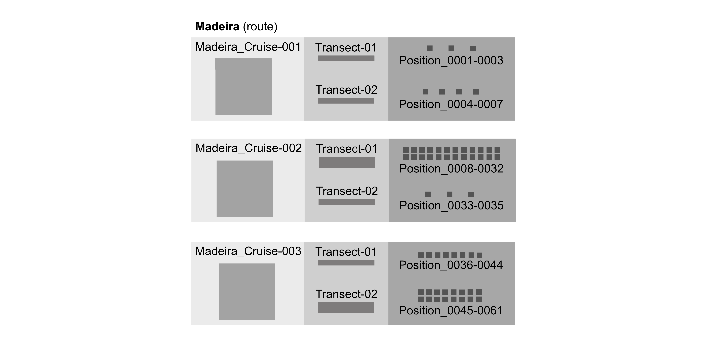

2.2.4 Examples: ENV-DATA and DNA derived data
Contents
- 1. Fish abundance & distribution
- 2. Hard coral cover & composition
- 3. Invertebrates abundance & distribution
- 4. Macroalgae canopy cover & composition
- 5. Mangroves cover & composition
- 6. Marine birds abundance & distribution
- 7. Marine mammals abundance & distribution
- 8. Marine turtles abundance & distribution
- 9. Microbes biomass & diversity
- 10. Plankton biomass & diversity
- 11. Seagrass cover & composition
- 12. eDNA & DNA derived data
2.2.4.4 Macroalgae canopy cover & composition
In this section we will encode a fictional macroalgal survey dataset into Darwin Core using the ENV-DATA approach, i.e. using an Event core with an Occurrence extension and an ExtendedMeasurementOrFact extension.

Figure: A fictional macroalgae survey with a single site, multiple zones, quadrats, and different types of transects.
First we can create the Event core table by extracting all events in a broad sense and populating attributes such as time, location, and depth at the appropriate level. The events at the different levels are linked together using eventID and parentEventID. As the survey sites has a fixed location we can populate decimalLongitude and decimalLatitude at the top level event. The zones have different depths, so minimumDepthInMeters and maximumDepthInMeters are populated at the zone level. Finally, as not all sampling was done on the same day, eventDate is populated at the quadrat and transect level.
| eventID | parentEventID | eventDate | decimalLongitude | decimalLatitude | minimumDepthInMeters | maximumDepthInMeters |
|---|---|---|---|---|---|---|
| site_1 | 54.7943 | 16.9425 | ||||
| zone_1 | site_1 | 0 | 0 | |||
| zone_2 | site_1 | 0 | 5 | |||
| zone_3 | site_1 | 5 | 10 | |||
| quadrat_1 | zone_1 | 2019-01-02 | ||||
| transect_1 | zone_2 | 2019-01-03 | ||||
| transect_2 | zone_3 | 2019-01-04 |
Next we can construct the Occurrence extension table. This table has the scientific names and links to the World Register of Marine Species in scientificNameID. The first column of the table references the events in the core table (see quadrat_1 for example highlighted in green).
| id | occurrenceID | scientificName | scientificNameID |
|---|---|---|---|
| quadrat_1 | occ_1 | Ulva rigida | urn:lsid:marinespecies.org:taxname:145990 |
| quadrat_1 | occ_2 | Ulva lactuca | urn:lsid:marinespecies.org:taxname:145984 |
| transect_1 | occ_3 | Plantae | urn:lsid:marinespecies.org:taxname:3 |
| transect_1 | occ_4 | Plantae | urn:lsid:marinespecies.org:taxname:3 |
| transect_2 | occ_5 | Gracilaria | urn:lsid:marinespecies.org:taxname:144188 |
| transect_2 | occ_6 | Laurencia | urn:lsid:marinespecies.org:taxname:143914 |
And finally there is the MeasurementOrFact extension table, which has attributes of the zones (shore height), the quadrats (surface area), the transects (surface area and length), and the occurrences (percentage cover and functional group). Attributes of occurrences point to the Occurrence extension table using the occurrenceID column (see occ_1 and occ_2 highlighted in blue and orange). Note that besides NERC vocabulary terms we are also referencing the CATAMI vocabulary for macroalgal functional groups.
| id | occurrenceID | measurementType | measurementTypeID | measurementValue | measurementValueID | measurementUnit | measurementUnitID |
|---|---|---|---|---|---|---|---|
| zone_1 | shore height | ? | high | ? | |||
| quadrat_1 | surface area | P01/current/AREABEDS | 0.25 | m2 | P06/current/UMSQ | ||
| quadrat_1 | occ_1 | cover | P01/current/SDBIOL10 | 24 | percent | P06/current/UPCT | |
| quadrat_1 | occ_2 | cover | P01/current/SDBIOL10 | 56 | percent | P06/current/UPCT | |
| transect_1 | surface area | P01/current/AREABEDS | 60 | m2 | P06/current/UMSQ | ||
| transect_1 | length | P01/current/LENTRACK | 30 | m | P06/current/ULAA | ||
| transect_1 | occ_3 | functional group | ? | sheet-like red | CATAMI:80300925 | ||
| transect_1 | occ_4 | functional group | ? | filamentous brown | CATAMI:80300931 | ||
| transect_1 | occ_3 | cover | P01/current/SDBIOL10 | 8 | percent | P06/current/UPCT | |
| transect_1 | occ_4 | cover | P01/current/SDBIOL10 | 24 | percent | P06/current/UPCT | |
| transect_2 | occ_5 | cover | P01/current/SDBIOL10 | 4 | percent | P06/current/UPCT | |
| transect_2 | occ_6 | cover | P01/current/SDBIOL10 | 16 | percent | P06/current/UPCT |
2.2.4.7 Marine mammals abundance & distribution
In this section we will explore how to encode a survey data set into Darwin Core using the ENV-DATA approach. As an example, sections of the actual data set of CETUS: Cetacean monitoring surveys in the Eastern North Atlantic, is used.
 Figure: A representation of the observation events of CETUS: Cetacean monitoring surveys in the Eastern North Atlantic, presenting the route Madeira as a site with three cruises (zones). Each Cruise is divided into different Transects and each transect contains a number of Positions.Create the Event core table by extracting all events and populating attributes. As in the previous example, the events at the different levels are linked together using eventID and parentEventID. As the survey observations were made at locations of Cetacean sightings instead of fixed locations, we can populate footprintWKT and footprintSRS as location information. Not all sampling was done on the same day, therefore eventDate is populated at the transect level.
| eventID | parentEventID | eventDate | footprintWKT | footprintSRS |
|---|---|---|---|---|
| Madeira | 2012-07/2017-09 | POLYGON ((-16.74 31.49, -16.74 41.23, -8.70 41.23, -8.70 31.49, -16.74 31.49)) | EPSG:4326 | |
| Madeira:Cruise-001 | Madeira | 2012-07 | MULTIPOINT ( (-8.7 41.19), (-9.15 38.7)) | EPSG:4326 |
| Madeira:Cruise-002 | Madeira | 2012-07 | MULTIPOINT ( (-9.15 38.7), (-16.73 32.74)) | EPSG:4326 |
| Madeira:Cruise-003 | Madeira | 2012-07 | MULTIPOINT ( (-16.73 32.74), (-9.15 38.7)) | EPSG:4326 |
Construct the Occurrence extension table with the scientific names and links to the World Register of Marine Species in scientificNameID. The first column of the table references the events in the core table (see Madeira:Cruise-001 highlighted in green).The occurrence ID corresponds to the Position of the observation (see Transect-01:Pos-0001 and CIIMAR-CETUS-0001 highlighted in blue, or Transect-01:Pos-0002 and CIIMAR-CETUS-0002 highlighted in orange).
| id | occurrenceID | scientificNameID | scientificName |
|---|---|---|---|
| Madeira:Cruise-001:Transect-01:Pos-0001 | CIIMAR-CETUS-0001 | urn:lsid:marinespecies.org:taxname:2688 | Cetacea |
| Madeira:Cruise-001:Transect-01:Pos-0002 | CIIMAR-CETUS-0002 | urn:lsid:marinespecies.org:taxname:2688 | Cetacea |
| Madeira:Cruise-001:Transect-01:Pos-0003 | CIIMAR-CETUS-0003 | urn:lsid:marinespecies.org:taxname:2688 | Cetacea |
| Madeira:Cruise-001:Transect-02:Pos-0004 | CIIMAR-CETUS-0004 | urn:lsid:marinespecies.org:taxname:2688 | Cetacea |
| Madeira:Cruise-001:Transect-02:Pos-0005 | CIIMAR-CETUS-0005 | urn:lsid:marinespecies.org:taxname:2688 | Cetacea |
| Madeira:Cruise-001:Transect-02:Pos-0006 | CIIMAR-CETUS-0006 | urn:lsid:marinespecies.org:taxname:2688 | Cetacea |
| Madeira:Cruise-001:Transect-02:Pos-0007 | CIIMAR-CETUS-0007 | urn:lsid:marinespecies.org:taxname:2688 | Cetacea |
And finally, the extendedMeasurementOrFact extension table has attributes of the zones (such as Vessel speed and Vessel Heading), the Transects (such as Wave height and Wind speed), and the Positions (such as Visibility and the Number of smaal/big ships >20m). Attributes of Positions point to the Occurrence extension table using the occurrenceID column (see Transect-01:Pos-0001 and Transect-01:Pos-0002 highlighted in blue and orange, respectively).
| id | occurrenceID | measurementType | measurementTypeID | measurementValue | measurementUnit | measurementUnitID |
|---|---|---|---|---|---|---|
| Madeira:Cruise-001 | Vessel name | Q01/current/Q0100001 | Monte da Guia | |||
| Madeira:Cruise-001:Transect-01 | Length of the track | P01/current/DSRNCV01 | 39.75 | km | P06/current/ULKM | |
| Madeira:Cruise-001:Transect-01:Pos-0001 | CIIMAR-CETUS-0001 | Visibility | 2000-4000 | Meters | P06/current/ULAA | |
| Madeira:Cruise-001:Transect-01:Pos-0001 | CIIMAR-CETUS-0001 | Wind speed | P01/current/WMOCWFBF | 1 | Beaufort scale | |
| Madeira:Cruise-001:Transect-01:Pos-0001 | CIIMAR-CETUS-0001 | Wave height | 2 | Douglas scale | ||
| Madeira:Cruise-001:Transect-01:Pos-0001 | CIIMAR-CETUS-0001 | Number of big ships (>20m) | 3 | |||
| Madeira:Cruise-001:Transect-01:Pos-0001 | CIIMAR-CETUS-0001 | Vessel heading | P01/current/HDNGGP01 | 206 | Degrees | P06/current/UAAA |
| Madeira:Cruise-001:Transect-01:Pos-0001 | CIIMAR-CETUS-0001 | Number of small ships (<20m) | 0 | |||
| Madeira:Cruise-001:Transect-01:Pos-0001 | CIIMAR-CETUS-0001 | Vessel speed | P01/current/APSAGP01 | 16 | Knots (nautical miles per hour) | P06/current/UKNT |
2.2.4.11 Seagrass cover & composition
The structure of the Event, Occurrence and ExtendedMeasurementOrFact extensions for Seagrass Cover & Composition is based on community feedback organised through the the Scientific Committee on Oceanic Research (SCOR): Coordinated Global Research Assessment of Seagrass System (C-GRASS). We acknowledge the work that the C-grass SCOR work group has done to develop a proposed scheme for completing Seagrass related extension files.
Here encode seagrass survey data into Darwin Core according to the ENV-DATA approach and using sections of the actual data set of Seagrass Monitoring at Chengue Bay, Colombia as an example dataset.
The Event core table is created by extracting all events and attributes. All events are linked together using eventID and parentEventID. eventDate is populated at the transect level with the recommended format that conforms to ISO 8601-1:2019. habitat is populated as a category or description of the habitat in which the Event occurred. Additional fieldNotes can also be provided if applicable. The recommended best practice for countryCode is to use an ISO 3166-1-alpha-2 country code. The remaining eventCore fields comprise of location data including maximumDepthInMeters, minimumDepthInMeters, decimalLongitude, decimalLatitude, coordinateUncertaintyInMeters, footprintWKT and footprintSRS.
| eventID | parentEventID | eventDate | habitat | fieldNotes | countryCode |
|---|---|---|---|---|---|
| USBsg-chengue-pastocoral | 2019-05-13 | seagrass | no notes | CO | |
| USBsg-chengue-pastomanglar | 2019-05-14 | seagrass | no notes | CO | |
| USBsg-chengue-pastocoral-SquidPopTransect1 | USBsg-chengue-pastocoral | 2019-05-13 | seagrass | no notes | CO |
| USBsg-chengue-pastocoral-SquidPopTransect2 | USBsg-chengue-pastocoral | 2019-05-13 | seagrass | no notes | CO |
eventCore continued:
| minimumDepthInMeters | maximumDepthInMeters | decimalLatitude | decimalLongitude | coordinateUncertaintyInMeters | footprintWKT | footprintSRS |
|---|---|---|---|---|---|---|
| 0.8 | 2 | 11.32021806 | -74.12753684 | 10 | POLYGON ((-74.1273259763024 11.320475512862,-74.1272978004008 11.3201655779439)) | EPSG:4326 |
| 0.8 | 0.8 | 11.31977189 | -74.12536879 | 10 | POLYGON ((-74.1253370891273 11.3195001294432,-74.1253337743154 11.3194968146313)) | EPSG:4326 |
| 0.8 | 2 | 11.32039927 | -74.12737404 | 50 | POINT (-74.1273740410759 11.3203992721869) | EPSG:4326 |
| 0.8 | 2 | 11.32027662 | -74.1273989 | 50 | POINT (-74.1273989021655 11.3202766241445) | EPSG:4326 |
Addtionally in the eventCore, it is recommended to further include information regarding license,
rightsHolder, bibliographicCitation, institutionID, datasetID, institutionCode and datasetName.
Next, the Occurrence extension table contain data for each occurrence with an occurrenceID and is linked to the eventCore with the eventID. This table should provide information on the basisOfRecord and occurrenceStatus. Scientific names and links to the World Register of Marine Species should be provided under scientificName and scientificNameID, respectively.
| eventID | occurrenceID | basisOfRecord | occurrenceStatus | scientificNameID | scientificName |
|---|---|---|---|---|---|
| USBsg-chengue-pastocoral | USBsg-chengue-pastocoral-tt | HumanObservation | present | urn:lsid:marinespecies.org:taxname:374720 | Thalassia testudinum |
| USBsg-chengue-pastomanglar | USBsg-chengue-manglar-tt | HumanObservation | present | urn:lsid:marinespecies.org:taxname:374720 | Thalassia testudinum |
| USBsg-chengue-pastocoral-SquidPopTransect1 | USBsg-chengue-pastocoral-fish-001 | HumanObservation | present | urn:lsid:marinespecies.org:taxname:158815 | Halichoeres bivittatus |
| USBsg-chengue-pastocoral-SquidPopTransect1 | USBsg-chengue-pastocoral-fish-002 | HumanObservation | present | urn:lsid:marinespecies.org:taxname:158932 | Lactophrys triqueter |
If a species was identified by an expert, the field identifiedBy can be populated. If the higher ranks of the species is known and available, these should also be populated, i.e. kingdom, phylum, class, order, family and genus. If the species is well-known by another common name, this name can be provided under vernacularName.
The final extension table, extendedMeasurementOrFact, contain the measurement information and data of each occurrence. This extension is also linked to the eventCore using the eventID, and linked to the occurrence table using the occurrenceID. The various measurements are populated with measurementType, measurementTypeID, measurementUnit, measurementUnitID, measurementValue, measurementValueID, measurementAccuracy, measurementMethod, measurementDeterminedBy and measurementDeterminedDate. The example dataset of Seagrass Monitoring at Chengue Bay, Colombia recorded a number of measurements and can be used as an example of how to populate the respective fields:
| eventID | occurrenceID | measurementID | measurementType |
|---|---|---|---|
| USBsg-chengue-pastocoral | USBsg-chengue-pastocoral-tt | USBsg-chengue-pastocoral-PhyQ01 | WaterTemp |
| USBsg-chengue-pastocoral | USBsg-chengue-pastocoral-tt | USBsg-chengue-pastocoral-PhyQ02 | Salinity |
| USBsg-chengue-pastocoral | USBsg-chengue-pastocoral-tt | USBsg-chengue-pastocoral-PhyQ03 | Dissolved oxygen |
| USBsg-chengue-pastocoral | USBsg-chengue-pastocoral-tt | USBsg-chengue-pastocoral-T1C1-shoot-01 | Shoot Density |
| USBsg-chengue-pastocoral | USBsg-chengue-pastocoral-tt | USBsg-chengue-pastocoral-T1C1-leafLenght-01 | Leaf Length |
| USBsg-chengue-pastocoral | USBsg-chengue-pastocoral-tt | USBsg-chengue-pastocoral-T1N1-DryBiomass | Total Dry Biomass |
| USBsg-chengue-pastocoral | USBsg-chengue-pastocoral-tt | USBsg-chengue-pastocoral-T1N1-biomassGL | Dry biomass of green leaves |
| USBsg-chengue-pastocoral | USBsg-chengue-pastocoral-tt | USBsg-chengue-pastocoral-T1N1-biomassNGL | Dry biomass of non green leaves |
| USBsg-chengue-pastocoral | USBsg-chengue-pastocoral-tt | USBsg-chengue-pastocoral-T1N1-biomassSH | Dry biomass of the shoots |
| USBsg-chengue-pastocoral | USBsg-chengue-pastocoral-tt | USBsg-chengue-pastocoral-T1N2-biomassR | Dry biomass of the roots |
| USBsg-chengue-pastocoral | USBsg-chengue-pastocoral-tt | USBsg-chengue-pastocoral-T1N2-biomassRIZ | Dry biomass of the rizome |
| USBsg-chengue-pastocoral | USBsg-chengue-pastocoral-tt | USBsg-chengue-pastocoral-T1N2-biomassOTH | Dry biomass of other seagrass species |
eMoF continued:
2.2.4.12 eDNA & DNA derived data
The following example use cases draw on both the GBIF guide and the DNA derived data extension to illustrate how to incorporate a DNA derived data extension file into a Darwin Core archive. Note: for the purposes of this section, only required occurrence core terms are shown, in addition to all eDNA & DNA specific terms. For additional occurrence core terms, refer to Occurrence.
2.2.4.12.1 eDNA data from Monterey Bay, California
The data for this example is from the use case "18S Monterey Bay Time Series: an eDNA data set from Monterey Bay, California, including years 2006, 2013 - 2016’. The data from this study originate from marine filtered seawater samples that have undergone metabarcoding for the 18S V9 region.
First, we can populate the Occurrence core file with all the required and highly recommended fields, as well as considering the eDNA and DNA specific fields. The Occurrence core contain the taxonomic identification of each ASV observed; its number of reads, as well as relevant metadata including the sample collection location, references for the identification procedure, and links to archived sequences.
Occurrence core:
| occurrenceID | basisOfRecord | organismQuantity | OrganismQuantityType | associatedSequences |
|---|---|---|---|---|
| 11216c01_12_edna_1_S_occ1 | MaterialSample | 19312 | DNA sequence reads | NCBI BioProject acc. nr. PRJNA433203 |
| 11216c01_12_edna_2_S_occ1 | MaterialSample | 16491 | DNA sequence reads | NCBI BioProject acc. nr. PRJNA433203 |
| 11216c01_12_edna_3_S_occ1 | MaterialSample | 21670 | DNA sequence reads | NCBI BioProject acc. nr. PRJNA433203 |
OccurrenceID and basisOfRecord are some of the required occurrence core terms, in addition to the highly recommended fields of organismQuantity and organismQuantityType. A selection of samples from this plate were included in another publication (Djurhuus et al., 2020),which is recorded in identificationReferences along with the GitHub repository where the data can be found.
Occurrence core (continued):
| sampleSizeValue | sampleSizeUnit | identificationReferences | identificationRemarks |
|---|---|---|---|
| 147220 | DNA sequence reads | GitHub repository Djurhuus et al. 2020 | unassigned, Genbank nr Release 221 September 20 2017 |
| 121419 | DNA sequence reads | GitHub repository Djurhuus et al. 2020 | unassigned, Genbank nr Release 221 September 20 2017 |
| 161525 | DNA sequence reads | GitHub repository Djurhuus et al. 2020 | unassigned, Genbank nr Release 221 September 20 2017 |
Next, we can create the DNA derived data extension which will be connected to the occurrence core with the use of occurrenceID. This extension contains the DNA sequences and relevant DNA metadata, including sequencing procedures, primers used and SOP’s. The recommended use of ENVO’s biome classes were applied to describe the environmental system from which the sample was extracted.
DNA derived data extension:
| occurrenceID | env-broad_scale | env_local_scale | env_medium |
|---|---|---|---|
| 11216c01_12_edna_1_S_occ1 | marine biome (ENVO:00000447) | coastal water (ENVO:00001250) | waterborne particulate matter (ENVO:01000436) |
| 11216c01_12_edna_2_S_occ1 | marine biome (ENVO:00000447) | coastal water (ENVO:00001250) | waterborne particulate matter (ENVO:01000436) |
| 11216c01_12_edna_3_S_occ1 | marine biome (ENVO:00000447) | coastal water (ENVO:00001250) | waterborne particulate matter (ENVO:01000436) |
The samples were collected by CTD rosette and filtered by a peristaltic pump system. Illumina MiSeq metabarcoding was applied for the target_gene 18S and the target_subfragment, V9 region. URL’s are provided for the protocols followed for nucleic acids extraction and amplification.
DNA derived data extension (continued):
| samp_vol_we_dna_ext | nucl_acid_ext | nucl_acid_amp | lib_layout | target_gene |
|---|---|---|---|---|
| 1000ml | dx.doi.org/10.17504/protocols.io.xjufknw | dx.doi.org/10.17504/protocols.io.n2vdge6 | paired | 18S |
| 1000ml | dx.doi.org/10.17504/protocols.io.xjufknw | dx.doi.org/10.17504/protocols.io.n2vdge6 | paired | 18S |
| 1000ml | dx.doi.org/10.17504/protocols.io.xjufknw | dx.doi.org/10.17504/protocols.io.n2vdge6 | paired | 18S |
For a detailed description of the steps taken to process the data, including algorithms used, see the original publication. Adding Operational Taxonomic Unit (OTU) related data are highly recommended and should be as complete as possible, for example:
| target_subfragment | seq_meth | otu_class_appr | otu_seq_comp_appr |
|---|---|---|---|
| V9 | Illumina MiSeq 2x250 | dada2;1.14.0;ASV | blast;2.9.0+;80% identity;e-value cutoff: x MEGAN6;6.18.5;bitscore: 100 :2% |
| V9 | Illumina MiSeq 2x250 | dada2;1.14.0;ASV | blast;2.9.0+;80% identity;e-value cutoff: x MEGAN6;6.18.5;bitscore: 100 :2% |
| V9 | Illumina MiSeq 2x250 | dada2;1.14.0;ASV | blast;2.9.0+;80% identity;e-value cutoff: x MEGAN6;6.18.5;bitscore: 100 :2% |
| otu_db | sop | DNA_sequence |
|---|---|---|
| Genbank nr;221 | dx.doi.org/10.17504/protocols.io.xjufknw or GitHub repository | GCTACTACCGATT… |
| Genbank nr;221 | dx.doi.org/10.17504/protocols.io.xjufknw or GitHub repository | GCTACTACCGATT… |
| Genbank nr;221 | dx.doi.org/10.17504/protocols.io.xjufknw or GitHub repository | GCTACTACCGATT… |
| pcr_primer_forward | pcr_primer_reverse | pcr_primer_name_forward | pcr_primer_name_reverse | pcr_primer_reference |
|---|---|---|---|---|
| GTACACACCGCCCGTC | TGATCCTTCTGCAGGTTCACCTAC | 1391f | EukBr | Amaral-Zettler et al. 2009 |
| GTACACACCGCCCGTC | TGATCCTTCTGCAGGTTCACCTAC | 1391f | EukBr | Amaral-Zettler et al. 2009 |
| GTACACACCGCCCGTC | TGATCCTTCTGCAGGTTCACCTAC | 1391f | EukBr | Amaral-Zettler et al. 2009 |
2.2.4.12.2 16S rRNA gene metabarcoding data of Pico- to Mesoplankton
DNA derived datasets can also include an extendedMeasurementsOrFact (eMoF) extension file, in addition to the occurrence and DNA derived extensions. In this example, environmental measurements were provided in an eMoF file, in addition to the DNA derived data and occurrence data. Here we show how to incorporate such measurements in the extensions.
In the publication “Diversity of Pico- to Mesoplankton along the 2000 km Salinity Gradient of the Baltic Sea”, a dataset with 16S rRNA gene metabarcoding data of surface water microbial communities was created from 21 off-shore stations, following a transect from Kattegat to the Gulf of Bothnia in the Baltic Sea. The full dataset entitled "Diversity of Pico- to Mesoplankton along the 2000 km Salinity Gradient of the Baltic Sea (Hu et al. 2016) is available from GBIF.
The Occurrence core contain information about the organisms in the sample including the taxonomy and quantity of organisms detected, the collection location, references for the identification procedure, and links to the sequences generated.
Important note: even though this dataset uses OTU identifiers for taxonomy (therefore not including scientificNameID) OBIS still recommends using scientificNameID.
Occurrence core:
| basisOfRecord | occurrenceID | eventID | eventDate |
|---|---|---|---|
| MaterialSample | SBDI-ASV-3:16S_1:919a2aa9d306e4cf3fa9ca02a2aa5730 | SBDI-ASV-3:16S_1 | 2013-07-13 07:08:00 |
| MaterialSample | SBDI-ASV-3:16S_1:43e088977eba5732bfa45e20b1d8cdd2 | SBDI-ASV-3:16S_1 | 2013-07-13 07:08:00 |
| MaterialSample | SBDI-ASV-3:16S_1:887bc7033b46d960e893caceb711700b | SBDI-ASV-3:16S_1 | 2013-07-13 07:08:00 |
| organismQuantity | organismQuantityType | sampleSizeValue | sampleSizeUnit |
|---|---|---|---|
| 2235 | DNA sequence reads | 12393 | DNA sequence reads |
| 795 | DNA sequence reads | 12393 | DNA sequence reads |
| 40 | DNA sequence reads | 12393 | DNA sequence reads |
| samplingProtocol | associatedSequences | identificationReferences | identificationRemarks |
|---|---|---|---|
| 200–500 mL seawater were filtered onto 0.22 μm pore-size mixed cellulose ester membrane filters; [https://doi.org/10.3389/fmicb.2016.00679] | [https://www.ebi.ac.uk/ena/browser/view/ERR1202034] | [https://docs.biodiversitydata.se/analyse-data/molecular-tools/#taxonomy-annotation] | DADA2:assignTaxonomy:addSpecies annotation against sbdi-gtdb=R06-RS202-1; confidence at lowest specified (ASV portal) taxon: 0.5 |
| 200–500 mL seawater were filtered onto 0.22 μm pore-size mixed cellulose ester membrane filters; [https://doi.org/10.3389/fmicb.2016.00679] | [https://www.ebi.ac.uk/ena/browser/view/ERR1202034] | [https://docs.biodiversitydata.se/analyse-data/molecular-tools/#taxonomy-annotation] | DADA2:assignTaxonomy:addSpecies annotation against sbdi-gtdb=R06-RS202-1; confidence at lowest specified (ASV portal) taxon: 0.56 |
| 200–500 mL seawater were filtered onto 0.22 μm pore-size mixed cellulose ester membrane filters; [https://doi.org/10.3389/fmicb.2016.00679] | [https://www.ebi.ac.uk/ena/browser/view/ERR1202034] | [https://docs.biodiversitydata.se/analyse-data/molecular-tools/#taxonomy-annotation] | DADA2:assignTaxonomy:addSpecies annotation against sbdi-gtdb=R06-RS202-1; confidence at lowest specified (ASV portal) taxon: 0.99 |
| decimalLatitude | decimalLongitude | taxonID | scientificName |
|---|---|---|---|
| 55.185 | 13.791 | ASV:919a2aa9d306e4cf3fa9ca02a2aa5730 | UBA6821 |
| 55.185 | 13.791 | ASV:43e088977eba5732bfa45e20b1d8cdd2 | Chthoniobacterales |
| 55.185 | 13.791 | ASV:887bc7033b46d960e893caceb711700b | BACL27 sp014190055 |
| kingdom | phylum | class | order | family | genus |
|---|---|---|---|---|---|
| Bacteria | Verrucomicrobiota | Verrucomicrobiae | Chthoniobacterales | UBA6821 | UBA6821 |
| Bacteria | Verrucomicrobiota | Verrucomicrobiae | Chthoniobacterales | NA | NA |
| Bacteria | Actinobacteriota | Acidimicrobiia | Acidimicrobiales | Ilumatobacteraceae | BACL27 |
The DNA derived data extension for metabarcoding data contains the DNA sequences and relevant DNA metadata, primers and procedures. This example table contains the highly recommended and recommended fields as populated with the example dataset data.
DNA derived data extension:
| id | env_broad_scale | env_local_scale | env_medium |
|---|---|---|---|
| SBDI-ASV-3:16S_1:919a2aa9d306e4cf3fa9ca02a2aa5730 | aquatic biome [ENVO_00002030] | marine biome [ENVO_00000447] | brackish water [ENVO_00002019] |
| SBDI-ASV-3:16S_1:43e088977eba5732bfa45e20b1d8cdd2 | aquatic biome [ENVO_00002030] | marine biome [ENVO_00000447] | brackish water [ENVO_00002019] |
| SBDI-ASV-3:16S_1:887bc7033b46d960e893caceb711700b | aquatic biome [ENVO_00002030] | marine biome [ENVO_00000447] | brackish water [ENVO_00002019] |
| lib_layout | target_gene | target_subfragment | seq_meth | sop |
|---|---|---|---|---|
| paired | 16S rRNA | V3-V4 | Illumina MiSeq | https://nf-co.re/ampliseq |
| paired | 16S rRNA | V3-V4 | Illumina MiSeq | https://nf-co.re/ampliseq |
| paired | 16S rRNA | V3-V4 | Illumina MiSeq | https://nf-co.re/ampliseq |
| pcr_primer_forward | pcr_primer_reverse | pcr_primer_name_forward | pcr_primer_name_reverse | DNA_sequence |
|---|---|---|---|---|
| CCTACGGGNGGCWGCAG | GACTACHVGGGTATCTAATCC | 341 | 805R | TCGAGAATTTTTCACAATG… |
| CCTACGGGNGGCWGCAG | GACTACHVGGGTATCTAATCC | 341 | 805R | TCGAGAATTTTTCACAATG… |
| CCTACGGGNGGCWGCAG | GACTACHVGGGTATCTAATCC | 341 | 805R | TGGGGAATCTTGCGCAATG… |
For this dataset, authors additionally provided measurements of of water sample temperature and salinity, which are provided in an extendedMeasurementOrFact extension file:
| measurementID | occurrenceID | measurementType | measurementValue | measurementUnit |
|---|---|---|---|---|
| SBDI-ASV-3:16S_1:temperature | SBDI-ASV-3:16S_1:919a2aa9d306e4cf3fa9ca02a2aa5730 | temperature | 16.9 | °C |
| SBDI-ASV-3:16S_1:salinity | SBDI-ASV-3:16S_1:919a2aa9d306e4cf3fa9ca02a2aa5730 | salinity | 7.25 | psu |
| SBDI-ASV-3:16S_1:temperature | SBDI-ASV-3:16S_1:1ead98754d34073a4606f7ff1e94126e | temperature | 16.9 | °C |